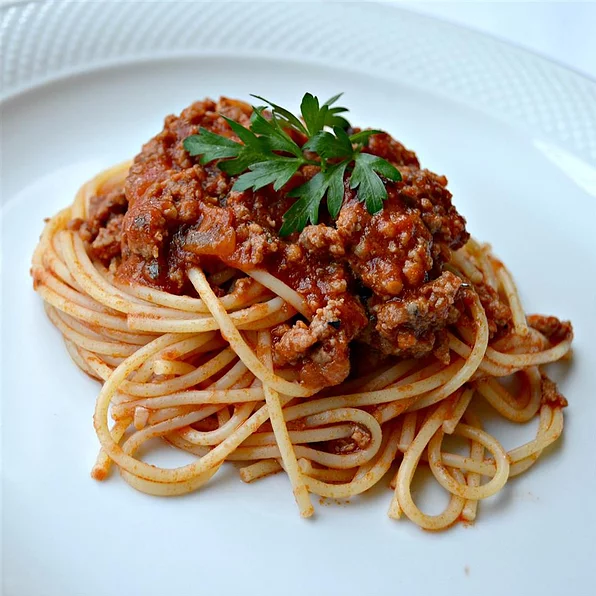

Spaghetti Sauce

Description
This is a spaghetti sauce recipe I came up with
while living up in Northern Canada for a few months. The recipe
does require a big time investment but it is one of my favourite dishes
to make on the weekend and then enjoy throughout the week. For those who
like a spicy meal this will be perfect for you!
Ingredients
- Brisket, tenderloin or steaks
- Curry powder
- Cajun Spices
- Crushed Garlic
- Bell Peppers
- White Onions
- Classico Spicy Red Pepper Pasta Sauce
Steps
- First we will cube up the meat you are planning to use
- Once the meat is cubed put the meat in a bowl with the curry powder, cajun spices and some garlic
- Once the dry rub has been applied cook the meat until medium well
- Next pour the meat and the juices into a large sauce pot
- Fill the sauce pot up with water until the meat is just barely submerged
- Let the water slowly boil off on medium/low setting, stirring occasionally
- While the meat is simmering in the pot cut up the bell peppers and onions
- Once the water has been sufficiently reduced add the peppers and onions
- Add the classico pasta sauce and simmer again
- While the sauce is simmering add your garlic
- Begin boiling pasta and serve when done